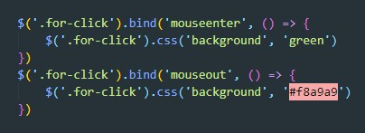

результат:
Далеко-далеко за словесными горами в стране.Библиотека Jquery определяет свой объект Event
свойства объекта:
pageX, pageY - возвращают координаты указателя мыши относительно начала координат документа
target - ссылается на элемент в котором возникло событие (в принципе так же как и в нативном JS)
currentTarget - ссылается на элемент в котором был зарегистрирован текущий обработчик события
relatedTerget - ссылается на другой элемент, вовлеченный в событие (например мыш отвели и вернется тот элемент на который попал курсор после отведения)
timeStamp - время в милисекундах возникновения события
which - определяет кнопку мыши или клавиатуры, нажатие которой вызвало событие
handler - ссылается на текущую функцию обработчика события
originalEvent - возвращает оригинальной Event нативного JS
Метод bind() - связывает событие с обработчиком события
Метод delegate() - вызывается относительно $(document) и принимает три аргумента (1 - селектор на ком будет слушаться событие, 2 - событие, 3 - callback функция)
В качестве первого аргумента можно передавать несколько событий
Метод unbind() - предотвращает вызов обработчика события. unbind удаляет только те обработчики, которые были вызваны с помощью метода bind. Если вызвать метод unbind() без аргументов то удалятся все обработчики события вызванные методом bind()